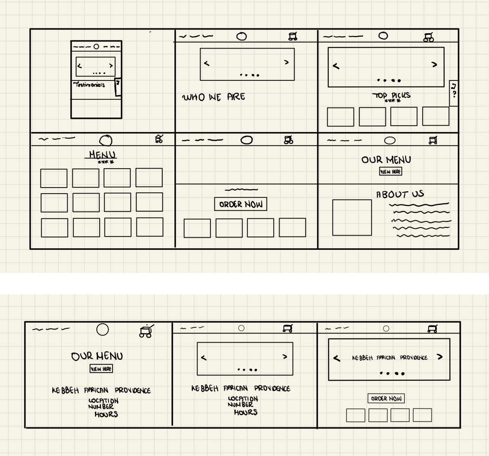

I. Introduction
For this project, I was assigned the task of selecting a webpage to analyze based on usability and accessibility standards. Subsequently, I embarked on redesigning and constructing an improved version of the chosen webpage. .
II. Role
In the capacity of the UI/UX designer, I took the lead in crafting wireframes encompassing both low-fidelity and high-fidelity iterations. Subsequently, I translated these designs into a minimum viable product (MVP) coded website, seamlessly integrating all the recommended enhancements. .
III. Time
Completed in 1 week.
IV. Problem/Context
Upon my arrival at Brown University, I sought out African cuisine to ease the transition of being away from home. However, I encountered challenges with the available websites, particularly in terms of clarity and detail. In particular, the website I chose for analysis suffers from subpar image quality and lacks clarity in conveying important information. Notably, the clash between the background and foreground elements detracts from the site's accessibility.
Banner Star Clash
- Description: Discuss the visual clash between the stars on the banner and the background.
- Proposed Solution: Suggest adjusting the color scheme or position of the stars for improved visual harmony.
Unclear Ordering Process
- Description: Address the ambiguity surrounding the online ordering process and in-person pickup.
- Proposed Solution: Recommend adding clear instructions or a dedicated section outlining the ordering and pickup procedure.
Limited Food Representation
- Description: There is an absence of comprehensive visual representations of the food items.
- Proposed Solution: Incorporate a gallery or interactive feature showcasing images of the available dishes.
Accessibility Issues
- Description: Colors and icons clash and there isn't enough contrast. There are missing alt tags.
- Proposed Solution: Recommend addressing missing alt text, ensuring accurate descriptions.

V. Wireframing
Following a comprehensive assessment of the website's usability and accessibility standards, I swiftly identified areas for improvement. Leveraging a structured approach, I dedicated nine minutes to produce nine wireframes, allocating one minute for each sketch. This rapid yet meticulous process ensured a focused exploration of solutions while maintaining efficiency.
After this, I put all the best features from the sketches together.
VI. Design Style Guide
Inspired by the rich culture of Ghana, a design style guide was created.
VII. Wireframing
All components were meticulously integrated into a high-fidelity wireframe, showcasing the culmination of the design process.

VIII. Implementation
Now, the website has been successfully coded and designed.
See Live Website